サーバー構築に伴うポート開放作業
はじめに
ポート開放はどのゲームにおいても、自宅PCでサーバーを構築する場合は基本的に必須。
やり方は共通なので、他のゲームでもサーバーを構築したくなった時の為に手順を記載する。
この記載はみつみさんの環境向けで、ネットの契約状況や利用しているルータ等によって手順は変わってくる。
※ググると出てくるネット上のページでは情報が足りなかったり、間違った情報や記載が結構あるので注意
1.作業一覧
【1】IPアドレスの手動設定（一度設定すればOK）
【2】windowsファイアウォールの設定（ゲーム毎に設定が必要）
【3】ルーターのNATエントリの追加とポート開放設定（ゲーム毎に設定が必要）
【1】IPアドレスの手動設定
この設定は一度実施すればOKであり、ゲームごとに毎回やる必要はない。
むしろネットに接続できなくなったり等、トラブルの元になるので基本的には変更しないこと。
ここで設定した内容を後から変更すると、参加者がみつみさんのサーバーに接続できなくなるためその点も注意。
①windowsキー ＋ R を押して「ファイル名を指定して実行」ウィンドウを開く
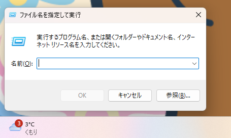②「ncpa.cpl」と入力してOKを押下する
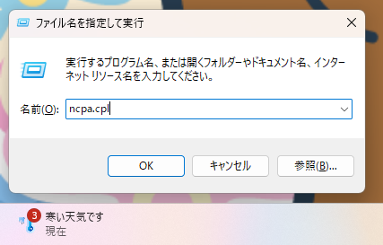③左上に表示されたネットワークのアイコンを右クリック→プロパティを選択
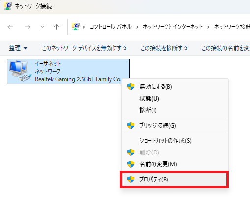④インターネットプロトコルバージョン4(TCP/IPv4)を選択→プロパティを選択
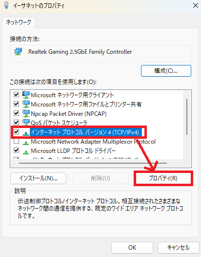⑤「次のIPアドレスを使う」を選択し、以下の情報を手入力→OK
IPアドレス：192.168.0.100
サブネットマスク：255.255.255.0
デフォルトゲートウェイ：192.168.0.1
優先DNSサーバー：192.168.0.1
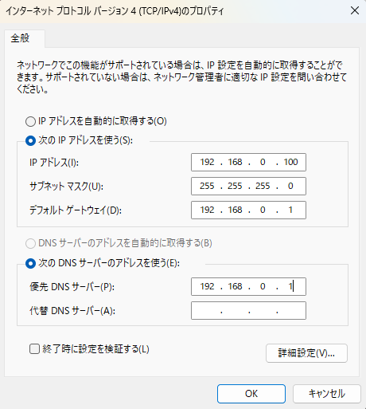以上でIPアドレスの手動設定は完了
作業完了後に問題なくネットが使える事を確認すること
【2】windowsファイアウォールの設定
この設定はサーバーを構築するゲーム毎に必要になる。（パルワールド用、Ark用等）
設定前にサーバー構築したいゲームのポート番号を確認（決定）しておく。
（例）パルワールド：8211 ARK：7777、27015
ゲーム毎に違う点は設定するポート番号だけで、それ以外は同じ手順で設定可能。
①windowsキー ＋ R を押して「ファイル名を指定して実行」ウィンドウを開く。
②「firewall.cpl」と入力してOKを押下する。
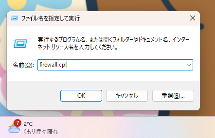③ファイアウォールの画面の中から詳細設定を開く。

④出てきた画面の中から受信の規則→新しい規則を選択する。
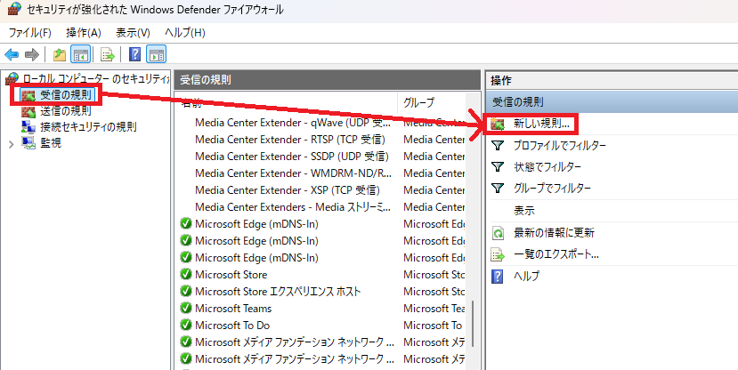⑤受信の規則のウィンドウが表示されたら、「ポート」を選択→次へ
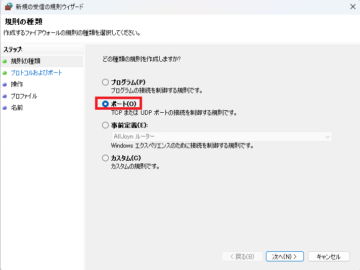⑥TCPおよびUDPどちらも設定が必要なので、どちらか選択して設定が完了したらもう片方の設定も同じように行う。
ポートは「特定のローカルポート」を選択し、最初に確認したゲーム毎のポート番号を設定する。
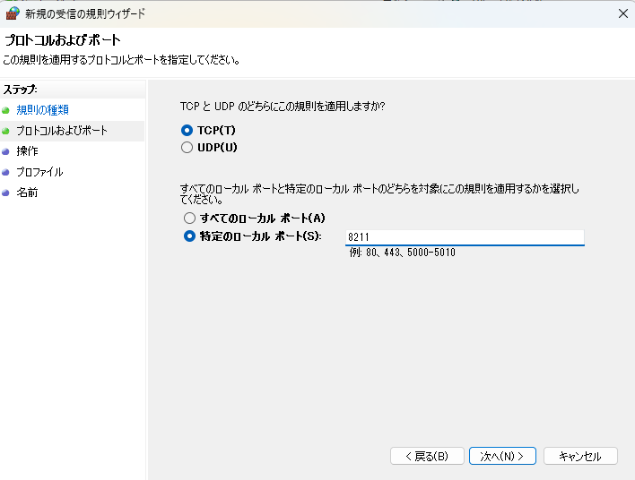⑦「接続を許可する」を選択→次へ
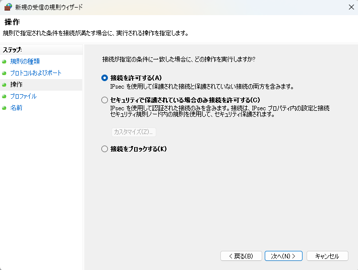⑧「プライベート」にチェック→次へ
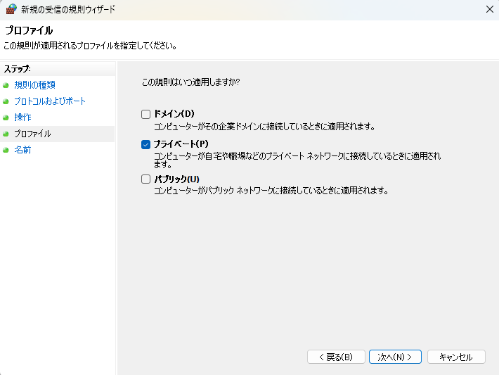⑨わかりやすい任意の名前をつける（UDPかTCPの記載があると良い）→次へ
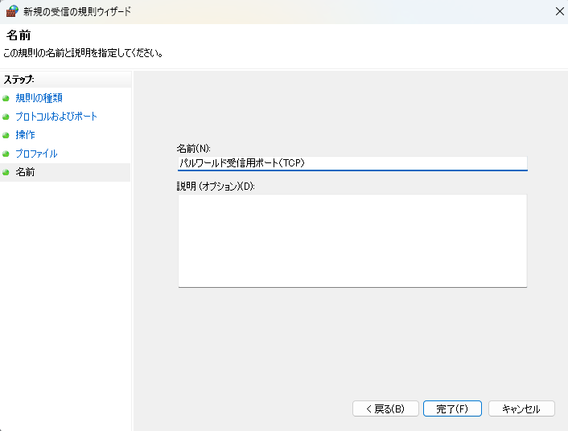⑩一覧画面に設定した項目が追加されている事を確認する。
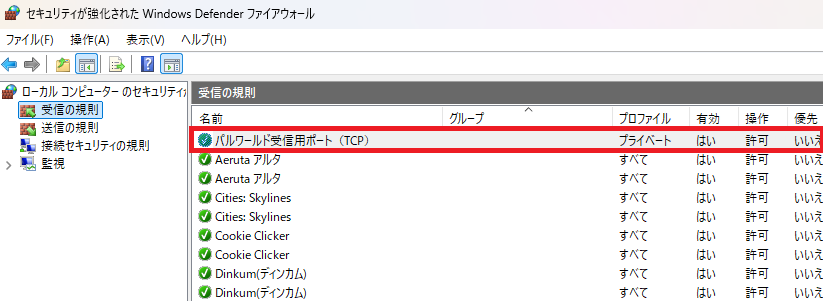⑪上記と同じ手順でTCP、UDPのうちもう片方も設定する。

⑫以下のように２つの設定が作成されていれば「受信の規則」は設定完了。
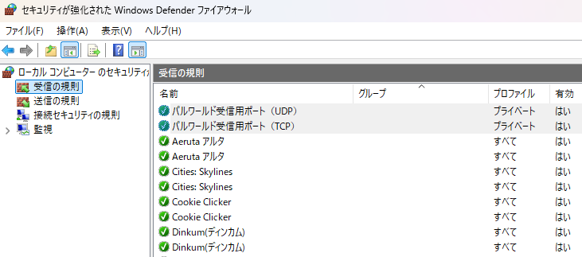⑬「送信の規則」も上記と同じ手順で２つの設定を作成する。
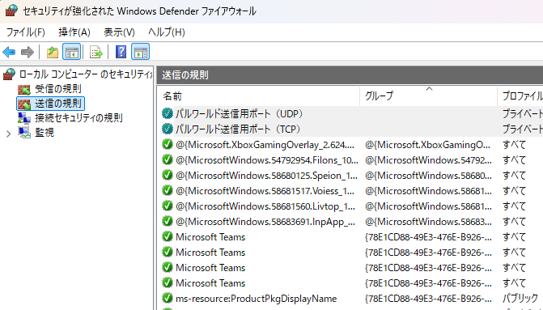全部で上記4つの設定を作成すればwindowsファイアウォールの設定は完了